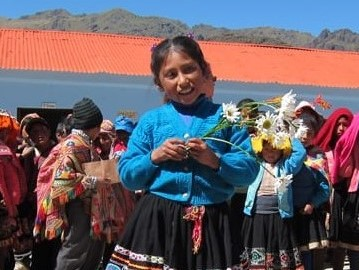

Cellphone Collection Drive
Peru

Partnering with Willka T'ika Children's Fund
To deliver and connect with indigenous children in the Andean Villages, I am collaborating with the Willka T'ika Children's Fund. The cellphones collected will be personally delivered by me with support from the fund. You can read more about their mission and founding story HERE.

